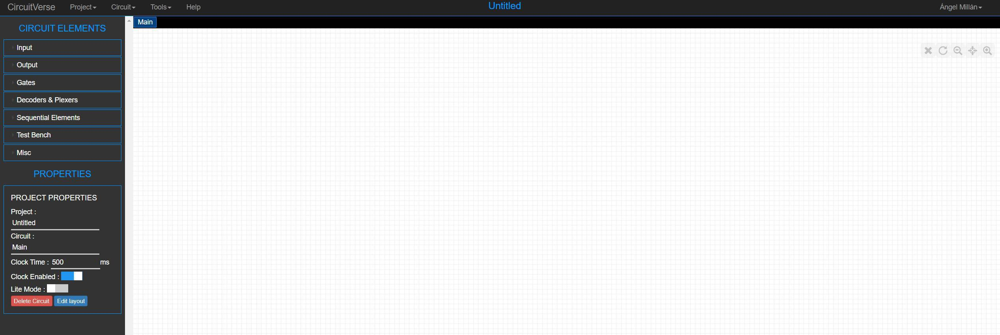

Electrónica digital
CircuitVerse
CircuitVerse es otro interesante simulador on-line que permite, además, almacenar nuestros diseños en la nube e, incluso, incrustarlos en un sitio web. Sorprendentemente, para la calidad que tiene, no necesita suscripciones, ni siquiera ofrece publicidad. Sólo una pega: está en inglés (¿esto es una pega?). Pero hay que acostumbrarse a esto, chico@s...

Podemos ver el efecto que produce la incrustación en un sitio web, con el sencillo ejemplo de la puerta AND:
Obra publicada con Licencia Creative Commons Reconocimiento No comercial Compartir igual 4.0